filter by type
filter by subject
sort by
-
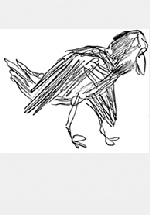
Black Sparrow Press Bibliography
1966
An archive of the small Santa Rosa press.
1008 records from 1966 to 1970.
-
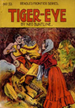
Dime Novels
1886
A sampling of dime novels from ten novel series.
962 records from 1886 to 1913.
-

Woods Western Americana
1933
A world class collection of western americana.
Approximately 8000 objects collected between 1933 to 1967.
-
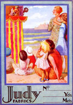
Curwen Press
1916
A collection of the innovative British press.
Approximately 1000 objects from 1916 to 1956.
-
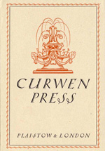
Curwen Press Ephemera
1919
-
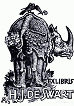
Bookplates
1930
-
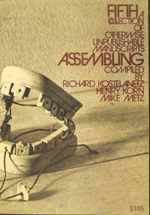
Books From the Home Museum
1960
Showcases the original bookworks made by some of the most influential artists of conceptual art.
48 books collected between 1960 to 1985.
-
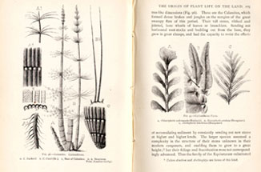
William A.S. Sarjeant Collection
book
Made up of several collections, including the Sarjeant History of Science Collection.
Over 70,000 books.
-
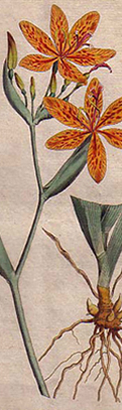
Garden of Delights
1787
Drawings of ornamental Plants from Curtis's Botanical Magazine.
105 images from the from 1787 and later.
-
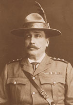
Sir Sam Steele
web
Highlights Steele's major role in the history of the British Empire.
-
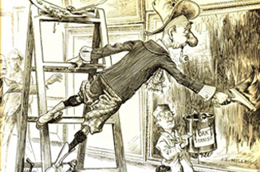
Sloper, Ally
1867
A sampling of Sloper’s most memorable antics from Ally Sloper’s Half Holiday.
327 unique cartoons from the 1867 to the 1916.
-
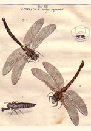
Entomology
book
The Dr Ronald B. Madge Entomology collection contains books of both scientific significance and great aesthetic beauty.
-
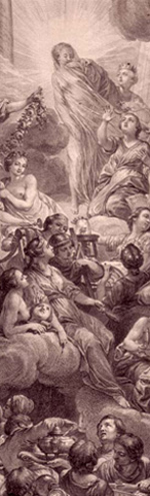
Diderot & D'Alembert Encyclopédie
1776
Encyclopédie, ou dictionnaire raisonné des sciences, des arts et des métiers uncut and bound in Dutch marbled paper over pasteboards, with handwritten labels.
35 folio volumes from 1770 to 1776.
-
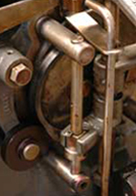
Arion Press
1974
A selection of publications from America's leading publisher of fine-press books.
-

Salzburg
1000
The original law collection of the Seminary Library of the Archbishop of Salzburg.
3,500 printed volumes spanning 8 centuries.
-
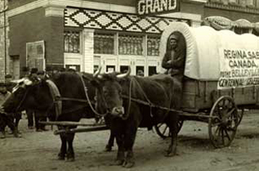
Last Best West Postcards
1900
Thousands of images from the first decade of the 20th century preserved in postcards.
-
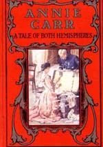
Victorian Children's Fiction
1780
The class of fiction held in this collection is distinctive both in content and appearance.
1780 to the 1870.
-
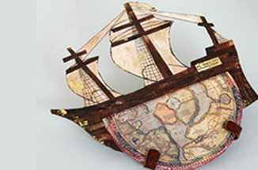
Artists' Books and Bookworks
unknown
The preeminent collection of artists' books in Canada.
-
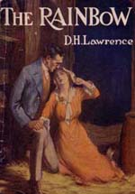
D.H. Lawrence: The Eccles
1910
The core of this collection is 101 volumes by D.H. Lawrence collected by David McAdam Eccles.
-

William Blake as an Artist
zart
A collection of Blake's artistry.
-
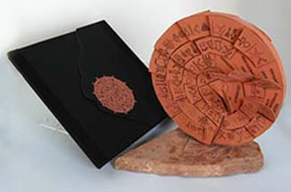
Canadian Women Artists' Books
1960
A selection of artists' books focusing on books produced in Canada by women.
62 books from the 1960s to the 1980s.
-
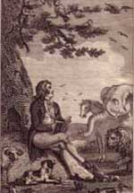
Minerva Press
1790
The Minerva Press is generally acknowledged as "the greatest single manufactory of fiction during the period".
1790s to the 1820s.
-
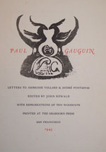
Grabhorn Press
1917
Ninety-nine per cent of the press output of the Grabhorn Press, San Francisco.
1200 items from 1917 to 1963.
-
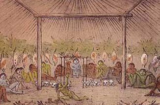
Gregory Javitch and The Javitch Collection
1677
This collection on North and South American Aboriginals is one of the finest in Canada.
More than 2,300 volumes from 1677 to 1943.
-
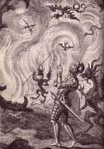
John Bunyan
1656
It is more difficult to find early editions of Bunyan than of almost any other major English author.
Over 300 volumes from 1656 to 1794.
-
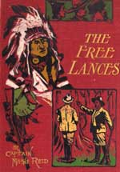
George James
1930
An outstanding collection of children's books.
327 unique plates from the 1930s to the 1970s.
-
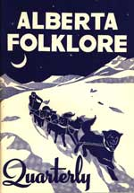
Alberta Folklore and Local History
unknown
1942
The archival collection includes many aspects of the history, tall tales, humour and stories of Alberta.
Over 1,000 accessioned items.
-
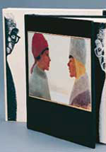
Pierre Ouvrard Virtual Exhibit
1949
-
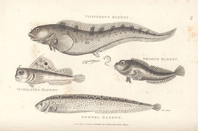
History of Fish
1847